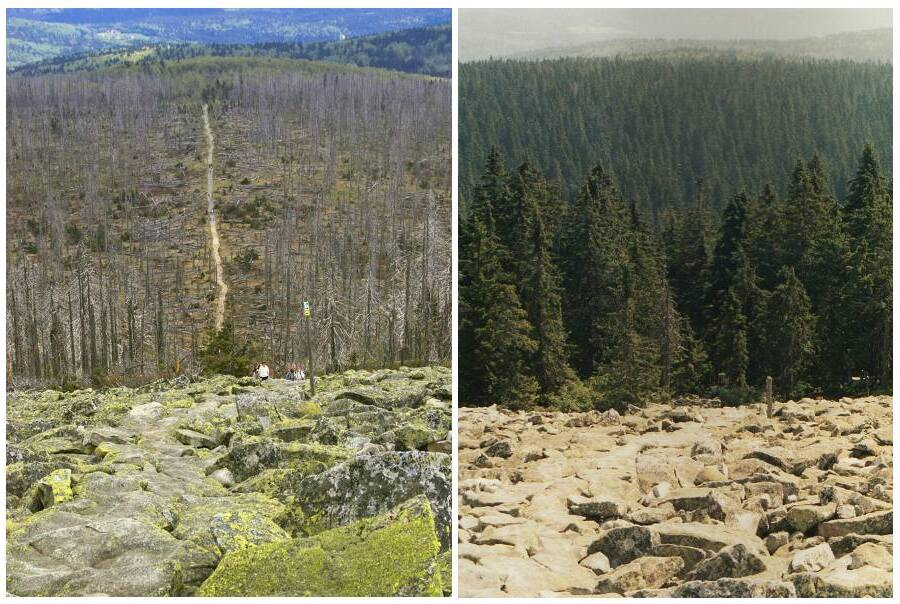

Current Situation in Bark Beetle Monitoring
- Bark beetles attack weakened trees first.
- Early attacks release pheromones attracting more beetles.
- Mass attacks happen quickly and silently.
The Golden Window
- Early detection window is only 4–5 days.
- After that, sawdust disappears and many attacks become invisible from the ground.
- Pheromone detection and aerial views are the only reliable early indicators.
| Current Situation | Our Sloution |
|---|---|
| ≈ 10 days to check a large forest area. | ≈ 5 days to scan the same area with drones. |
| Foresters walk long distances and may miss early infestations. | Drones cover large areas systematically with overlapping flight paths. |
| Only visible symptoms are found. | Combines aerial imagery with pheromone sensors for very early detection. |
Our Solution – Bark Busters Drone Search
We deploy drones equipped with pheromone sensors and cameras. They scan the forest, detect abnormal pheromone levels and suspicious tree patterns, and send precise GPS hotspots to forest managers.
- Drones fly automated routes across the forest.
- Sensors detect pheromones in the forest air above tree crowns.
- Signals reveal the very beginning of infestation.
- GPS hotspots are mapped instantly and shared with forest owners.
This allows saving trees before they die and before the infestation spreads.

Forest area before and after using Bark Busters drone-based detection.
How It Works
- 1. Drone Flight – Drones fly pre-planned routes over the forest canopy.
- 2. Sensing – Onboard pheromone sensors and cameras record data.
- 3. Analysis – AI detects bark beetle patterns and pheromone peaks.
- 4. Mapping – GPS hotspots appear on a digital map.
- 5. Intervention – Foresters receive coordinates and can act early.
Team
Yazan
Conrad
Konrad
Philipp
Gaini
Contact
(Form is for demo purposes – connect it to your backend or an email service if needed.)